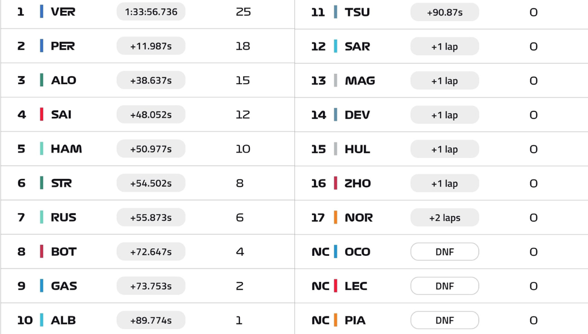

Foto: Fórmula 1

-05/032023-
Hoje finalmente tivemos o primeiro GP da temporada e só quando as luzes se apagaram que percebi a saudade que eu realmente estava.
Como já era esperado, Max Verstappen largou muito bem e se manteve em P1, mas acho que o que ninguém esperava era a diferença que ele abriria do segundo colocado, que em três voltas já era de 3s. Em uma prova tranquila e sem preocupação, o holandês ganhou o primeiro GP do ano. O que ninguém esperava é que Charles Leclerc, que trocou a bateria pouco antes da corrida, tivesse problema no up (ainda não revelado) e abandonasse a corrida na volta 41. Mesmo com o desgaste acentuado dos pneus, ele se mantinha na terceira colocação, atrás da dupla da Red Bull.
Seu companheiro de equipe, Carlos Sainz, que também teve dificuldade com os pneus, terminou em quarto após uma batalha com Fernando Alonso, na qual o bicampeão levou a melhor e garantiu o pódio na volta 45. Hamilton também pressionou Sainz e até tentou, mas não conseguiu a ultrapassagem. Apesar de não ser a posição que a Mercedes queria, o heptacampeão abrilhantou uma disputa linda com Fernando Alonso na volta 37.
Atrás de Lewis tivemos Lance Stroll que, apesar do erro no início do GP em uma disputa com George Russell, acabou encostando em seu companheiro de equipe sem nenhum prejuízo para ambos e conseguiu se manter à frente da Mercedes 63 de George Russell.
Temos que falar da Alpine. De um lado, Pierre Gasly, que largou em último, mas terminou em P9 com a bela escalada e marcando seus primeiros pontos pela equipe. De outro, Ocon, o piloto começou sendo penalizado com 5s por não estar exatamente em posição na largada. Com isso, ele parou nos boxes para cumprir a punição, mas os mecânicos começaram a mexer no carro antes do tempo, exatamente 0,4s antes, e veio mais 10s. Mas claro que isso não era suficiente, e ele ainda levou mais 5s por ultrapassar o limite de velocidade no pit lane. Na volta 43, a Alpine achou melhor levar o carro para os boxes e preservar o que ainda era possível depois desse desastre.
Quem também não teve um dia nada bom, assim como tem sido desde a pré-temporada, é a McLaren. Na volta 13, Oscar Piastri teve problema em seu volante e, após 40 segundos parado nos boxes tentando resolver, deixou a corrida. Lando Norris, que batalhou contra seu carro durante 57 voltas e parou APENAS 6 vezes nos boxes, fechou em P17, o último a terminar o GP.
volta rápida ficou por conta de Zhou Guanyu na volta 57A, mas isso não teve efeito prático, além de tirar o ponto que até aquele momento era de Gasly, já que o piloto terminou em P16 e não marcou o ponto da volta rápida.
Menção honrosa para as Williams, que tiveram uma corrida limpa e consistente e seus pilotos terminaram em P10 (Alex Albon, o último a pontuar) e P12 (Logan Sargeant).
O que posso concluir após repassar os acontecimentos é que sim, a RedBull é a favorita, pelo menos até chegarem as atualizações, que costumam acontecer a partir de Baku. A Ferrari é a segunda força, mas tem muito trabalho pela frente. A Aston vai dar trabalho, principalmente para a Mercedes, em busca de um possível P3 no campeonato, e a Williams está longe de ser a última equipe, como foi nos últimos anos.
Agora que passou a emoção do primeiro GP da temporada, podemos respirar fundo e nos vemos daqui a duas semanas, no terrível GP da Arábia Saudita.
Colocação Final do GP do Bahrein.
Informações: Fórmula 1